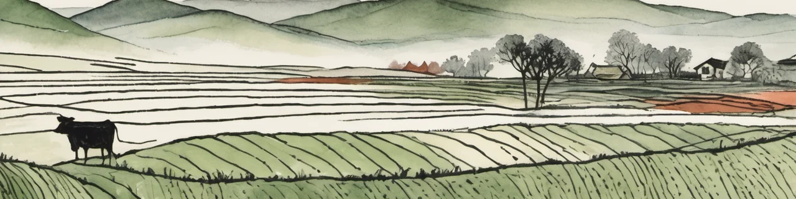
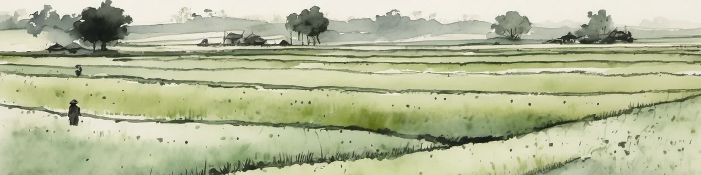
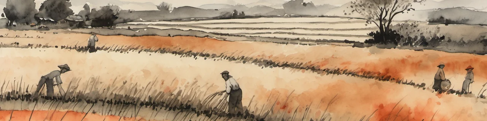

立春
2月 · 备耕
检修农具，挑选种子，晒种催芽，为春耕做准备。
顺天应时
二十四节气不是挂在墙上的日历，而是写在田里的时间表。 什么时候翻地、什么时候下种、什么时候收割，老祖宗早就替我们排好了。
农事总览
二十四节气诞生于黄河流域的农耕实践。古人抬头看日影、低头看物候， 把一年分成二十四个节点，每个节点都对应着具体的农活：该翻地了、该下种了、该收麦了。 它最早不是文化符号，而是一套行之有效的农时系统。
下面这份农事历，按春夏秋冬四季排列，每个节气挑出最要紧的一两件农活。 它不追求面面俱到，只希望你在读的时候，能听见一点田野里的节奏。
老农安排农事，讲究“三看”：看天、看地、看苗。看天定播期，看地定墒情，看苗定肥水—— 说到底，是把节气的平均节律，落到自家地块的具体情况上。

春耕是一年里最讲“抢”的季节。土壤化冻后要尽快整地保墒，种子下地前还得看地温——太早烂种，太晚误了生长期。北方麦区忙着追肥浇水，南方稻区开始育秧，果园也在修剪、清园、防病虫。
2月 · 备耕
检修农具，挑选种子，晒种催芽，为春耕做准备。
2月 · 整地
雨水渐多，麦田追肥，果园修剪，疏通沟渠防渍。
3月 · 防虫
春雷惊醒蛰虫，开始春灌，重点防治越冬病虫害。
3月 · 春播
昼夜平分，棉花、玉米整地下种，水稻开始育秧。
4月 · 种瓜点豆
“清明前后，种瓜点豆”，春播进入全年第一个高峰。
4月 · 插秧
雨生百谷，水稻插秧正当时，棉花播种收尾。

夏耘的关键字是“抢”和“管”。芒种前后，麦收和稻种撞在一起，是一年中最忙的“双抢”；进入盛夏，稻田要浅水勤灌、及时除草，棉花要整枝打杈，还要盯紧旱涝和病虫害。
5月 · 夏管
早稻插秧收尾，夏收作物进入后期管理。
5月 · 备收
麦粒渐满，准备夏收，稻田追肥、浅水灌溉。
6月 · 双抢
有芒的麦子快收，有芒的稻子可种，一年里最忙的时节。
6月 · 防汛
白昼最长，夏播作物田管，防旱防涝两手抓。
7月 · 除草
高温多雨，稻田除草，棉花整枝打杈。
7月 · 抗旱
一年最热，抗旱排涝，重点防治病虫害。

秋收是“收”与“种”同时进行的季节。水稻、玉米、大豆陆续成熟，要抢晴收获、及时晾晒；另一边，冬小麦、油菜又要赶在降温前播下去。秋分前后，收种两头都不能松劲。
8月 · 灌浆
玉米灌浆，水稻抽穗，秋收进入倒计时。
8月 · 秋管
暑气渐止，水稻扬花，秋菜开始播种。
9月 · 采收
昼夜温差大，棉花采收，冬小麦备种。
9月 · 秋收秋种
稻谷归仓，冬小麦播种，收和种挤在同一段时间里。
10月 · 收薯
收红薯、花生，种油菜，果树施基肥。
10月 · 防冻
抢收晚稻，果树防冻，蔬菜入棚。
冬藏不是停工，而是把力气用在“看不见”的地方：修水利、积农家肥、检修农机，给果树修剪、给小麦冬灌。地歇人不歇，来年春耕的底气，都是冬天攒下的。
11月 · 冬藏
蔬菜入窖，小麦冬灌，牲畜补栏。
11月 · 积肥
小雪封地，积肥造肥，修缮水利设施。
12月 · 农闲
大雪封河，农活渐少，检修农机，牲畜防寒。
12月 · 育苗
数九开始，温室育苗，积攒农家肥。
1月 · 修剪
天寒地冻，果树修剪，防冻保墒。
1月 · 备春
岁末极寒，选购种子化肥，准备来年春耕。
农事小词典